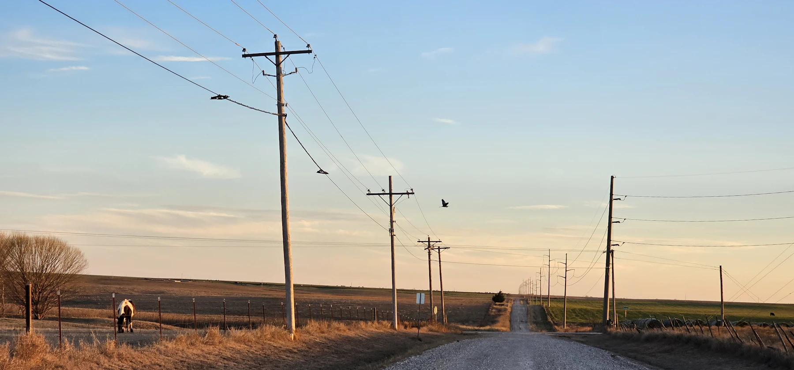

High-level design
Translate the approved architecture and service area into route drawings and quantity schedules for design review.
- Route and service-area drawings
- Agreed high-level material quantities
- Input and route exceptions
Outside plant fiber design
OSP production support for operators, engineering primes, and construction teams. Turn field inputs into coordinated drawings, splice details, and material schedules.

Scope and deliverables
Set the work limits, source files, output formats, and review owner before production starts.
Translate the approved architecture and service area into route drawings and quantity schedules for design review.
Produce detailed aerial or underground sheets from the approved route, field data, and construction criteria.
Work through a defined queue of redlines and update the affected drawings and schedules together.
A scoped pilot
Agree on a drawing limit and one consolidated review cycle. Use the handoff to verify that the files meet your standards before expanding the scope.
Confirm route limits, field records, drafting standards, file formats, and the authorized reviewer.
Build the agreed sheets and schedules. Log gaps and conflicts for your team's decision.
Apply consolidated feedback and return the native files, PDFs, and open-items log under the agreed revision.
Your designated reviewer controls design decisions, field certification, and required sign-off or submittals.
Project intake
Share a short scope summary with the project state, route type, approximate mileage or drawing count, and target review date. Leave out client files and confidential records.
Prefer email? info@skarion.com